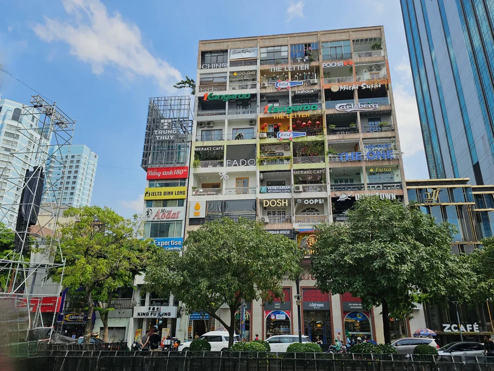
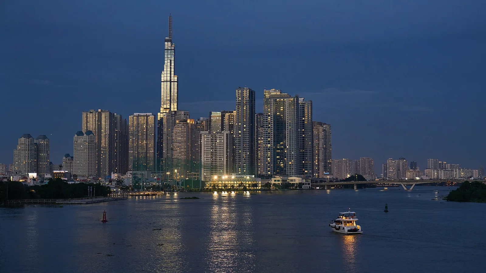
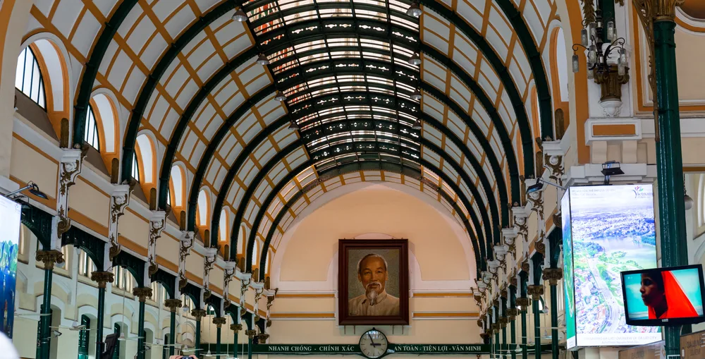

카페 아파트
카페와 거리
응우옌후에 보행자거리 42번지. 층마다 카페와 상점이 들어서 있으며 광장에서 건물 전체를 볼 수 있습니다.

표지 사진 Radek Kucharski / CC BY 2.0 / 크기 및 형식 변경

카페와 거리
응우옌후에 보행자거리 42번지. 층마다 카페와 상점이 들어서 있으며 광장에서 건물 전체를 볼 수 있습니다.

건축과 카페
분홍색 외관으로 알려진 성당입니다. 맞은편 콩카페와 함께 들르기 좋은 코스입니다.

건축과 산책
아치형 지붕이 있는 중앙우체국 뒤로 응우옌반빈 책거리를 둘러보는 도보 코스입니다.